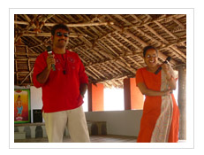
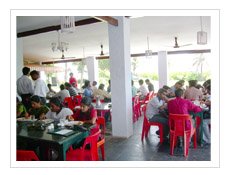
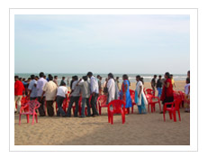
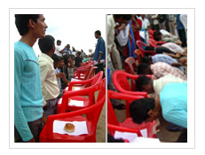
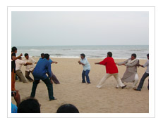
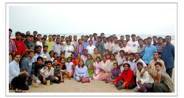

Datapage Corporate Day Celebrations, 2006 came alive this fall once again with lots of fun and entertainment that was essentially Datapage in origin and spirit. The day kick startedwith a lot of funfare. A memorable trip that filled the day with many wonderful moments that will keep lingering in our hearts all through the year and for many more to come...
In keeping with the tradition of reflecting on the past year, we at Datapage decidedtomake this day, the best of all years. Team Datapage is a highly enthusiastic one and was all geared upto have loads of fun. The one thing we were all looking forward to was to get away from the rush and routine of everyday life. This trip did just that! It was a perfect getaway.
On 23rd of September, we at Datapage organised a fun trip to Golden Sun Beach Resorts, a beautiful resort with the most exotic backdrop on the Eastern Coastline. Couldn’t have asked for a better day. The Sun was up, shining bright, reflecting the sunny smiles and laughter overflowing, as the teamboarded the bus close to 8.00 am. A couple of hours ride allowed us to just sit back and enjoy the ride with music, dance and pure fun.
The morning was a great go with cultural activities-singing competition, play-acting, humour titbits. and other events. The team participated with a zeal and verve that was unmatched by any other and gave it their full.
Gopi, Mohan, Santhosh, Charanya, Karthick and Prasanna participated in the singing competition. The Best Singer Award was won by Charanya and Prasanna.
Sai Murugan, Prasanna, Bharath, Devi, Venkat, Alex and others staged a comedy play that made us fall over from excessive laughter. It was a meaningful play with an enduring message that was very relevent to our industry.
We then, took a break to explore the resort inspired by the scenery. Some were at the swing near the beach, the others walked down the beach enjoying the cool, vibrant breeze.

Lunch was an elaborate affair from soups to desserts, true to its reputation GoldenSun hadarranged an interesting array of tasty, stumptuous, well-chosen courses of Vegetarian and Non-Vegetarian food.

Team Datapage was divided into groups- Tweety, Tom, Jerry, Mickey and Donald to make the events more interesting, competitive and much more fun. The events were Ad Zap, Dumb Charades, Anthakshari,Musical Chair, Tug of War, Balloon Stamping Competition and finally Eating Competition.
Dumb Charades: There were four interesting rounds in this game. Identifying famous Personalities, interesting places, names of popular movies and popular songs. The First prize went to Jerry, the second to Tweety team and the third to Tom.
Musical Chair: This was a total fun game, which saw several rounds, as the chairs became lesser and music filled the air, the participants enthusiasm rocketed sky high. The coveted prize was won by Rajasekhar.
Tug of War and Balloon Stamping Competition: This team and individual event was the two most enjoyed game of the evening that had every one roaring with laughter and unlimited fun amidst lots of cheer.
Eating Competition: Another event that was very interesting and brought all the participants to their knees. The Eating Competition was won by Mohan, who was ajudged the Eating Champion.
Mr & Ms Datapage: Finally, the competition for the most coveted titles–Mr & Ms Datapage, 2006 was a much-awaited one. The nominations and the voting had taken place the previous week. The results which were to be announced at the end of the day. Charanya won the Ms. Datapage award & Bharath the Mr. Datapage Award.

Mickey emerged, the overall champion of the day by bagging the highest number of points. To encourage the competitiveness of the Team, each group member was awarded a special prize.
At times, it can be healthy to take a step back, look at the bigger picture, and get fresh appreciation for all the winning efforts. For this reason, the management had handpicked the many exciting gifts and prizes with lots of care. Each thoughful gift signifying the associated event and serving as an apt reward for the winners lighting their bright faces aglow.
The hours spent with great friends and teammates–the conversations, team antics, laughs and competitions. All of these memories have one thing in common–they all involve the collaborative human element. We can’t think of a better way to end this epic journey. It’s all about adding this memorable experience to other such unforgettable memories as we walk down memory lanes.

Several features qualify this trip as the “Trip of the Year” distinction. First of all, the trip was a well-organised one in the capable hands of our HR Manager Mrs Vijayalakshmi. Secondly, the exuberent enthusiasm of Team Datapage. The biggest reason that Golden Sun Beach Resort is this year’s featured trip is, THE TRIP WAS A TOTAL BLAST!!! |